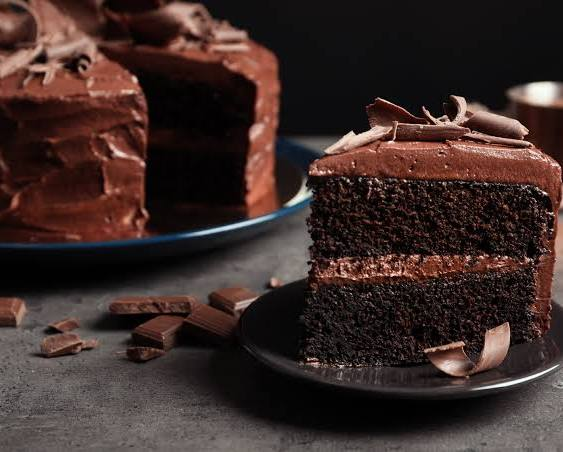
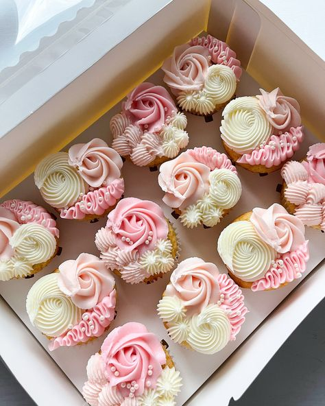
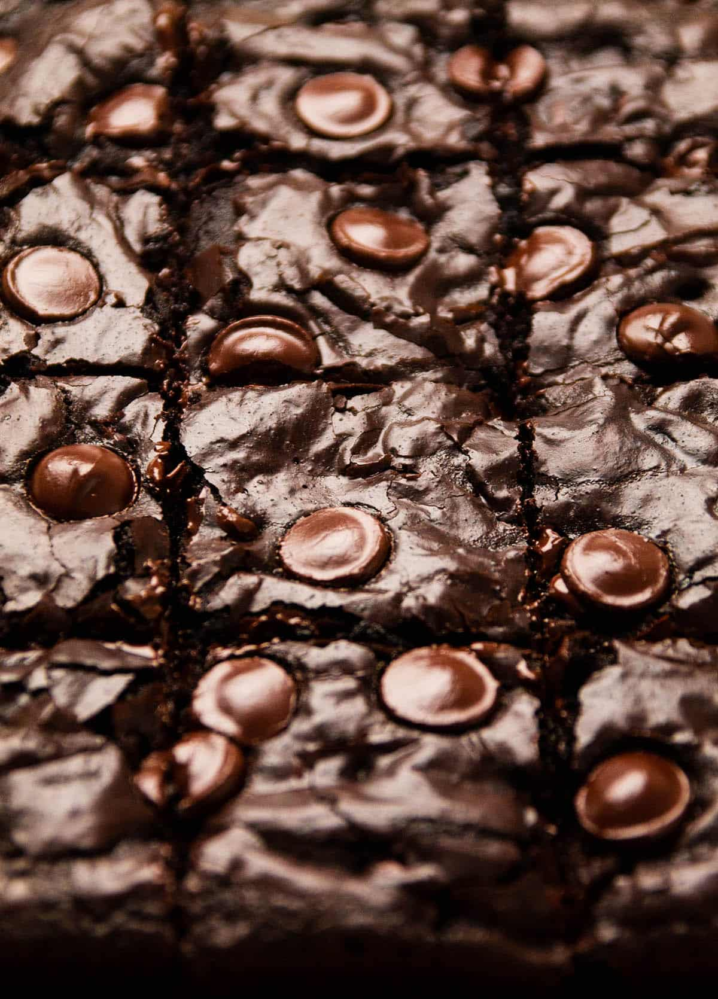

Para celebrar
Torta de chocolate
Capas suaves de chocolate con una presentación irresistible.
ConsultarConocer más
Bienvenidos a Sweet Charm: una pastelería creada como proyecto escolar para demostrar cómo una página web puede presentar productos y ofrecer experiencias interactivas.
Un recorrido digital para aprender, explorar y jugar.

Fotografías, fichas de productos y navegación sencilla.
Capas suaves de chocolate con una presentación irresistible.


Este sitio combina HTML, CSS y JavaScript en un proyecto estudiantil. Cada sección invita a descubrir productos y a interactuar con el contenido.
Conocé al equipo →